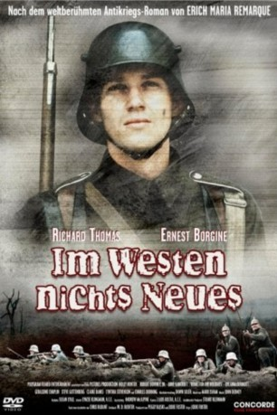

#6978 Im Westen nichts Neues
Alternativ: All Quiet on the Western Front
Auszeichnungen: 2 GoldenGlobes gewonnen
 
 IMDB-Wertung: 7.1 / 10
IMDB-Wertung: 7.1 / 10  Metascore: 0
Metascore: 0 
Der junge Deutsche Paul Bäumer meldet sich gemeinsam mit seinen Klassenkameraden während des ersten Weltkrieges freiwillig an die Westfront. Auf den Enthusiasmus folgt durch die brutale Realität schon bald Ernüchterung.
Jahr: 1979
Dauer: 156 Minuten
FSK: 12
Land: USA Studio: CBSTonspuren:
Untertitel: Deutsch,
Auflösung: 1080p (1920x1080) Größe: 14336 MB
Genre: Drama, Krieg
Regisseur: Delbert Mann
Drehbuch: Paul Monash
Soundtrack:
Darsteller:
 Richard Thomas als Paul Baumer
Richard Thomas als Paul Baumer Ernest Borgnine als Stanislaus Katczinsky
Ernest Borgnine als Stanislaus Katczinsky Donald Pleasence als Kantorek
Donald Pleasence als Kantorek Ian Holm als Himmelstoss
Ian Holm als Himmelstoss Patricia Neal als Paul's Mother
Patricia Neal als Paul's Mother- David Bradley als Albert Kropp
- Dominic Jephcott als Peter Leer
 Ewan Stewart als Detering
Ewan Stewart als Detering Michael Sheard als Paul's Father
Michael Sheard als Paul's Father- Mark Roemmich als Gerard Duval
- Tomás Juricka als 2nd Recruit
- Ken Hutchison als Hammacher
- Paul Mark Elliott als Josef Behm
- Matthew Evans als Friedrich Muller
- George Winter als Franz Kemmerich
- Mark Drewry als Tjaden
- Colin Mayes als Westhus
- Katerina Lírová als Paul's Sister
- Mary Miller als Mrs. Kemmerich
- Denys Graham als Kaiser
- Marie-Noëlle Barre als French Girl
- Dominique Varda als French Girl
- Arda Brokmann als French Girl
- Andrew Burleigh als Young Recruit
- Drahomíra Fialková als Sister Libertine
- Veronika Jeníková als Anna
- Stephen Reynolds als Franz
- Ian Hastings als Lewandowski
- David de Keyser als Cook
- Simon Hayword als Gessler
- Bruce Purchase als Cook , uncredited
- Paul Shearer als 3rd injured soldier in ward , uncredited
Datei: X:\1979\Im Westen nichts Neues (1979, FSK12, 1920x1080).mkv seit 15.09.2017
Festplatte: HD 1971-1979
 Es gibt insgesamt 29 Filme in der Gruppe '1979'
Es gibt insgesamt 29 Filme in der Gruppe '1979'